Communication, Sensor and Jamming Systems Equations¶
Date: 25 February 2009
Table of Contents
Overview¶
The purpose of this document is to describe the equations and algorithms used in the interactions between objects in WSF. This includes:
Sensor interactions
Communication interactions
Disruption (jamming) interactions
Common Radio Frequency Equations¶
WSF utilizes a common set of classes to encapsulate the components involved in radio frequency (RF) interactions (in reality, some features of these classes are also used for non-RF interactions, but that is not important here). The first section of the document will deal with the basics of signal transmission and reception. Subsequent sections of the document will deal with specific uses (radar, SAR, ESM, jamming, communications).
Ignoring the details of the processing of the received signal, RF interactions fall into two classes:
Direct or one-way, i.e.: an emitted signal going directly to a receiver
Indirect or two-way: i.e.: an emitted signal reflected from an object and then received.
The computation of the received signal power can be broken into distinct steps:
Emission from the transmitting antenna
Propagation to the target or the receiver
- For indirect or two-way interactions:
Reflection from the target
Propagation from the target to the receiver
Reception by the receiving antenna
Calculation of direct transmitted power¶
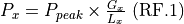
Symbol |
Source |
Description |
|---|---|---|
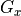 |
transmitter antenna_pattern |
The gain of the transmitting antenna in the direction of the target object (receiver or platform). This includes any electronic beam steering losses (Equation RF.6) |
|
transmitter internal_loss |
The internal losses in the transmitter between the power source and the antenna |
|
transmitter power |
The peak power of the transmitter. This should be the power of a single pulse. |
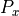 |
Computed |
The transmitted power. |


Propagation of the signal in free space¶
The propagation of a free space signal from the source (s) to the destination (d) is computed using the following equation. In a one-way interaction, ‘s’ and ‘d’ are the transmitter and receiver respectively (Equation RF.2b). In a two-way interaction, there are two propagation paths. The first is from the transmitter to the target (Equation RF.2c) and the second is from the target to receiver (Equation RF.2d).
General form |
(RF.2a) |
|
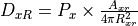 |
Transmitter - to - receiver |
(RF.2b) |
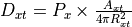 |
Transmitter - to - target |
(RF.2c) |
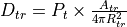 |
Target - to - receiver |
(RF.2d) |
Symbol |
Source |
Description |
|---|---|---|
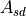 |
transmitter attenuation_model |
The fraction of the signal that remains after computing the effects of atmospheric attenuation while propagating the signal from the source (d) to the destination (d). |
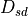 |
Computed |
The computed free space power density at the destination (s) that originated from the source (d) |
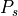 |
Computed |
The power emitted from the source (s). This will be either the transmitted power (Equation RF.1) or the reflected power from a target (Equation RF.3) |
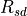 |
Computed |
The slant range from the source (s) to the destination (d) |
Reflecting a free space signal¶
A target that reflects a free space signal effectively creates a new ‘transmitting source’. The power of the source is simply the product of the signal density of the incoming signal times the effective area of the reflecting source. The reflector can be a platform (such as when performing a two-way radar interaction) or can be the surface of the earth (when performing clutter calculations). The reflected power can then be propagated to a receiver by application of equation RF.2.
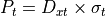
Symbol |
Source |
Description |
|---|---|---|
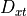 |
Equation RF.2c |
The power density at the target (t) of the signal that originated from the transmitter (x). |
|
Computed |
The power created by the reflection of the incoming signal off of the target. |
|
radar_signature |
The radar cross section of the target. |


Reception of a free space signal¶
RF.4a is used for direct, one-way (communications, passive RF and jamming). RF.4b is used two-way (Radar, SAR).
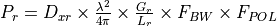 |
One-way, Transmitter - to - receiver |
(RF.4a) |
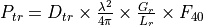 |
Two-way, Target - to - receiver |
(RF.4b) |
Symbol |
Source |
Description |
|---|---|---|
|
See section 2.5 |
The fraction of the received signal that is admitted, accounting for possible mismatches in the frequency/bandwidth of the transmitted and the frequency/bandwidth of the receiver. Note: This is not incorporated for radar interactions because it is assumed that the transmitter and receiver are matched. |
|
transmitter_polarization receiver_polarization polarization_effects antenna_pattern |
The fraction of the received signal that is admitted, accounting for possible mismatches in the polarization of the transmitter and the receiver. Note: This is not incorporated for radar interactions because it is assumed that the transmitter and receiver are matched. |
|
transmitter propagation_model |
The pattern propagation factor. This accounts for the constructive/destructive interference between the direct and indirect signal paths. Note: This is current only implemented for radar interactions. |
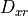 |
Equation RF.2b |
The power density at the receiver of the signal that originated from the transmitter |
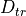 |
Equation RF.2d |
The power density at the receiver of the signal that was reflected from the target |
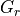 |
receiver antenna_pattern |
The gain of the receiving antenna in the direction of the target object (receiver or platform). This includes any effects of electronic beam steering (Equation RF.6) |
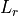 |
receiver internal_loss |
The internal losses in the receiver between the output of the antenna and the receiver |
|
Computed |
The received power. |


Bandwidth ratio¶
The factor FBW is used to account for the fact that the frequency spectrum of the transmitter may not match the tuning band of the receiver. It is the fraction of the transmitter spectrum that is within the tuning band of the receiver.
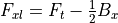 |
Lower Frequency of transmitted spectrum |
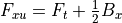 |
Upper Frequency of transmitted spectrum |
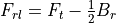 |
Lower tuning frequency of the receiver |
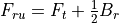 |
Upper tuning frequency of the receiver |
Symbol |
Source |
Description |
|---|---|---|
|
receiver bandwidth |
The bandwidth of the receiver. |
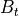 |
transmitter bandwidth |
The bandwidth of the transmitter. |
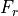 |
receiver frequency |
The center frequency of the range of frequencies the receiver can receive. |
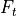 |
transmitter frequency |
The center frequency of the transmitter frequency spectrum |

The resulting value of FBW depends on the relationship of the upper and lower frequencies of the transmitter and receiver.
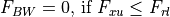
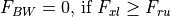
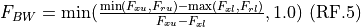
Receiver noise power¶
The following definitions apply to the computation of receiver noise power:
Symbol |
Source |
Description |
|---|---|---|
|
Internal constant |
Boltzmann’s constant (1.3806505E-23 J/deg-K) |
|
receiver bandwidth – or – transmitter pulse_width |
The bandwidth of the receiver. If the bandwidth was not specified AND if the transmitter is pulsed, the bandwidth will be computed as (1 / pulse_width) (i.e.: A matched filter will be assumed). |
|
Computed |
The noise power |
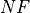 |
receiver noise_figure |
The receiver noise figure (default 1.0) |
|
Internal constant |
Standard temperature (290 deg-K) |
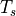 |
Computed |
The system noise temperature. |


The noise power will be computed using the following process. The value from the first step whose conditions for use are satisfied will be used:
If noise_power was specified, used the defined value.
If the bandwidth cannot be determined, use the value of -160 dBW.
If noise_figure was specified and both antenna_ohmic_loss and receive_line_loss were omitted, compute the noise power as:
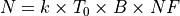
Compute the noise power using the algorithm defined in ‘’Radar Range Performance’’, Lamont V. Blake, 1986, Artech House, Inc., Chapter 4.
Noise temperature due to the antenna (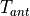 = sky temperature due to the antenna pointing angle):
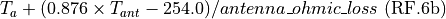
Noise temperature contribution due to receive line loss:
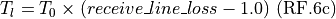
Noise temperature contribution due to the receiver:
math:`T_r = T_0 times (noise_figure - 1.0)text{ (RF.6d)}
Total system temperature:
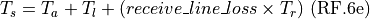
Noise power:
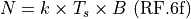
Antenna Gain Patterns¶
Each transmitter and receiver has associated with it an antenna gain pattern. Antenna patterns are created using the global antenna_pattern command. An antenna pattern is attached to a transmitter or receiver by using the antenna_pattern command inside the transmitter and receiver block. If an antenna pattern has not been selected for a transmitter or receiver, a uniform gain of 1.0 will be assumed.
The gain pattern is a function of azimuth and elevation with respect to the pattern origin (typically the bore sight or pointing angle). For a given interaction, the azimuth and elevation of the point of interest with respect to the pattern origin is computed.
Antenna gain patterns may be represented in several ways:
A rectangular table which provides the gain as a function of azimuth and elevation.
An ALARM table.
A uniform (constant) pattern.
A circular sin(x)/x pattern.
A rectangular sin(x)/x pattern.
A cosecant pattern.
A GENAP pattern (GENAP is a subset of the functionality provided by generalized antenna pattern routine found in the government TRAMS model).
Collections of tables may be used to form a composite pattern of polarization and frequency.
The gain of an electronically steered beam can be optionally modified to include the effects of pointing the beam at an angle off the normal of the array. This capability is enabled by using the electronic_beam_steering command in the transmitter or receiver. The following equation is used:

Symbol |
Source |
Description |
|---|---|---|
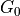 |
antenna_pattern |
The unmodified gain of the antenna when looking at the point of interest. |
|
Computed |
The gain, modified to include the effects of electronic beam steering. |
|
Computed |
The angle between the normal to the antenna face and the vector to the point of interest. |
|
electronic_beam_steering_loss_exponent |
An optional exponent to reflect the amount of degradation of the gain as the beam is moved away form the normal of the antenna face. |


Atmospheric Attenuation¶
Computation of atmospheric attenuation is enabled by the presence of the atmospheric_attenuation command inside the transmitter block.
There are currently two models available. These were extracted from SUPPRESSOR and are currently only applicable to ground-based systems (the tables assume the emitter is on the ground).
blake - An atmospheric absorption model written by L.V. Blake, Naval Research Laboratory. This is based on a family of 42 attenuation curves for frequencies between 100 MHz and 10 GHz and elevation angles between 0 and 10 degrees. The curves are flat beyond 300 nautical miles. These tables were published in ‘Radar Systems Analysis’, Section 15.1, David K. Barton, Artech Publishing.
earce - An atmospheric absorption model from the ESAMS/ALARM/RADGUNS Common Environment (EARCE). This is a collection of precomputed tables which are valid for frequencies in the range 100 MHz to 18 GHz and 27 GHz to 40 GHz. Frequencies less than 100 MHz will assume 100 MHz. Frequencies between 18 GHz and 27 GHz and above 40 GHz will use a very computationally-intensive method to determine the attenuation and should be avoided.
There is another model in development based on the International Telecommunications Union (ITU) Recommendation ITU-R P.676. That implementation will work for air and surface platforms and support a wider range of frequencies.
Propagation Algorithms¶
Computation of propagation effects (other than atmospheric attenuation) is enabled by the presence of the propagation_model command inside the transmitter block.
This currently supports one model:
fast_multipath - An implementation of the method defined in ‘Radar Range Performance Analysis’, Lamont V. Blake, 1986, Artech House, Inc. It computes the effects of constructive or destructive interference due to the specular reflection of the signal off of a round, rough Earth. Two factors can be supplied to define the properties of the surface at the reflection point.
Clutter Algorithms¶
WSF currently has a very limited ability to represent clutter. The use of clutter is enabled by the presence of the clutter_model command in the receiver block. At the current time the only option is to utilize a clutter table, and it has not been validated.
Radar Sensor (WSF_RADAR_SENSOR)¶
The WSF_RADAR_SENSOR model effectively computes the power of a single pulse (or a continuous waveform) and then computes the effect of integrating multiple pulses.
Calculation of Received Power¶
Applying equations RF.1 through RF.4, the following is used to calculate the received power from a single pulse (or a continuous waveform). Note that this does not including jamming. That is handled in a separate step.
![P_r &= D_{tr} \times \frac{\lambda^2}{4{\pi}} \times \frac{G_r}{L_r} \times F_{40} \text{, From RF.4b} \\
&= P_t \times \frac{A_{tr}}{4{\pi}R_{tr}^2} \times \frac{\lambda^2}{4{\pi}} \times \frac{G_r}{L_r} \times F_{40} \text{, From RF.2d} \\
&= D_{xt} \times \sigma_t \times \frac{A_{tr}}{4{\pi}R_{tr}^2} \times \frac{\lambda^2}{4{\pi}} \times \frac{G_r}{L_r} \times F_{40} \text{, From RF.3b} \\
&= P_x \times \frac{A_{xt}}{4{\pi}R_{xt}^2} \times \sigma_t \times \frac{A_{tr}}{4{\pi}R_{tr}^2} \times \frac{\lambda^2}{4{\pi}} \times \frac{G_r}{L_r} \times F_{40} \text{, From RF.2c} \\
&= P_{peak} \times \frac{G_x}{L_x} \frac{A_{xt}}{4{\pi}R_{xt}^2} \times \sigma_t \times \frac{A_{tr}}{4{\pi}R_{tr}^2} \times \frac{\lambda^2}{4{\pi}} \times \frac{G_r}{L_r} \times F_{40} \text{, From RF.1 (Radar.1)}](../../_images/math/831bf6a71ec5203475c9f0bc77a176bf13fc1911.png)
Signal Processing and Detection¶
The processed signal is computed as:
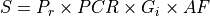
Symbol |
Source |
Description |
|---|---|---|
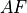 |
adjustment_factor |
A general adjustment factor that can be used to account for other constant effects that are not provided by the model. |
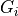 |
integration_gain |
The gain due to the integration of multiple pulses. Note: This is computed internally if swerling_case is specified. |
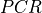 |
transmitter pulse_compression_ratio |
The pulse compression ratio |
|
Equation Radar.1 |
The received power |
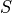 |
Computed |
The processed power. |

The signal to noise is computed as:
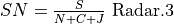
Symbol |
Source |
Description |
|---|---|---|
|
receiver clutter_model |
The clutter power |
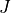 |
Equation Jam.1 |
The incident jammer power. This is computed as the sum of the incident power on the radar receiver at the time of the detection interaction. |
|
Equation RF.6 |
The receiver noise power |
Equation Radar.2 |
The processed power. |
|
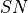 |
Computed |
The signal-to-noise (or interference) ratio. |

The detection of the target is determined by one of two mechanisms. A simplistic binary detector may be used by specifying a detection_threshold. A successful detection is declared if the signal-to-noise exceeds this threshold.
A Marcum-Swerling detector may also be used which will produce a probability of detection for a given signal-to-noise ratio. A successful detection is declared if the computed probability of detection exceeds the required probability of detection. This detector is selected by using the swerling_case, number_of_pulses_integrated, probability_of_false_alarm and detector_law commands.
Passive RF Sensor (WSF_ESM_SENSOR)¶
Passive RF calculation (ESM, RWR) utilize the one-way equation.
The ‘r’ subscript values are for the passive RF receiver and the ‘x’ subscript values are for the sensor, jammer or communications transmitter. The expanded equation is as follows:
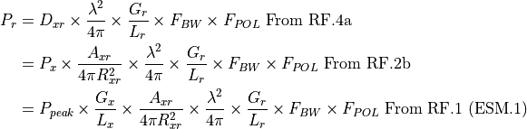
The signal-to-noise is computed as:
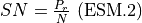
Symbol |
Source |
Description |
|---|---|---|
|
Equation RF.6 |
The receiver noise power |
|
Equation ESM.1 |
The processed power. |
Computed |
The signal-to-noise (or interference) ratio. |
A successful detection will be declared if SN is exceeds the threshold defined by:
The value of pulsed_detection_threshold if the transmitted signal is pulsed.
The value of continuous_detection_threshold if the transmitted signal was non-pulsed.
The value of detection_threshold if neither of the above thresholds was specified.
SAR Sensor (WSF_SAR_SENSOR)¶
SAR calculations are an extension of the radar calculations.
TODO Clutter calculations, Doppler fold-over
Required Collection Time¶
The equation used to compute the time required to collect an image of the desired resolution is:
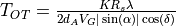
Symbol |
Source |
Description |
|---|---|---|
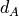 |
Computed |
The desired azimuth resolution |
|
doppler_overcollect_ratio |
The overcollect ratio (default 1.0) |
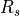 |
Computed |
The slant range from the sensor to the image center |
Computed |
The ground speed of the sensing platform. |
|
|
transmitter frequency -or- wavelength |
The frequency of the transmitted signal |
|
Computed |
The azimuth angle between the ground track of the sensing platform and the vector to the image center. |
|
Computed |
The azimuth angle between the ground |


RF Jammer (WSF_RF_JAMMER)¶
Jamming calculations utilize the one-way equation where the transmitter is the jammer and the receiver is a radar or communications receiver. Jamming calculations take place at the time a radar detection or communication attempt occurs. WSF will sum the power for every possible jammer than can affect the output (i.e.: if there is in-band power that would affect the receiver).
The ‘r’ subscript values are for the sensor or communications receiver and the ‘x’ values are for the jamming transmitter. The expanded equation is a follows:
Communications (WSF_RADIO_TRANSCEIVER)¶
Communications calculations use the one-way equation.
The ‘r’ subscript values are for the communications receiver and the ‘x’ values are for the communications transmitter. The expanded equation is a follows:
The signal-to-noise ratio is computed as:

Symbol |
Source |
Description |
|---|---|---|
Equation Jam.1 |
The incident jammer power. This is computed as the sum of the incident power on the receiver at the time of the interaction. |
|
|
Equation RF.6 |
The receiver noise power |
|
Equation Comm.1 |
The processed power. |
Computed |
The signal-to-noise (or interference) ratio. |
The communications attempt will be declared successful if SN exceeds the detection_threshold for the receiver.
IRST Sensor (WSF_IRST_SENSOR)¶
Computing the target irradiance¶
Determine the background radiance. This includes a relatively simply capability to include the effects of looking up against the sky or down at the ground.
Compute the contrast radiant intensity;
Symbol |
Source |
Description |
|---|---|---|
|
platform infrared_signature |
The source radiant intensity (infrared radiant intensity) of the target |
The background radiant intensity |
||
platform optical_signature |
The projected area of the target as seen by the sensor. |
|
Computed |
The contrast radiant intensity of the target |

Compute the atmospheric transmittance (the fraction of the signal that remains after propagation along the path):
Compute the effective target irradiance (sometimes known as CEI)
Adjusting for installation effects¶
Sensors are often mounted behind a window, which will mask regions from the field of view, or otherwise reduce the signal. This masking or signal reduction is collectively called ‘installation effects’, and is accounted for by the use of an antenna_pattern command in the receiver block (While there is no ‘antenna’ in an infrared sensor, it is being treated as such for convenience). The command should refer to an antenna gain pattern where the gain (or more possibly, the loss) represents a factor by which the effective target irradiance should be modified to account for installation effects, i.e.:
where G is the ‘antenna gain’ in the direction of interest. Setting the gain to a very small value in the regions that are outside the window effectively makes targets in that region undetectable.
Computing the probability of detection¶
The probability of detection is computed using the following equation:
Symbol |
Source |
Description |
|---|---|---|
Equation IRST.1 |
The effective target irradiance |
|
noise_equivalent_irradiance |
The equivalent irradiance of the noise of the sensor. |
|
Computed |
The probability of detection |
|
The Gaussian probability function (see the ‘Handbook of Mathematic Functions’, Abramowitz and Stegun, equation 26.2.5) |
||
Computed |
Signal-to-noise ratio |
|
detection_threshold |
The detection threshold |